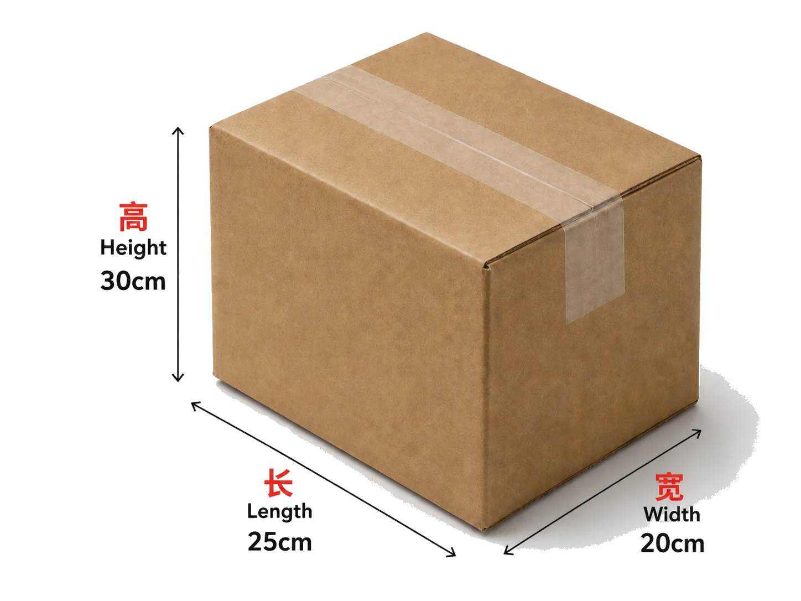

直接答案：泰国寄中国多少钱？
泰国寄中国多少钱，没有固定单价。运费按计费重量核算，计费重量取实际重量与体积重量两者中的较大值，再结合货物品类、泰国取件城市、中国收货城市、空运或陆运、包装与派送要求综合确认。想知道具体费用，提供货物照片、品名、重量、外箱尺寸、取件地址和中国收货地址，客服审核后会给出对应方案与报价。
泰国寄到中国的运费怎么计算？
计费重量是运费核算的基础。先称实际重量，再按外箱尺寸算体积重量：体积重量（公斤）等于长（厘米）乘宽（厘米）乘高（厘米）除以 5000。两者比较，取较大值作为计费重量。
举例一：外箱 25×20×30 厘米，体积重量等于 25×20×30÷5000＝3 公斤。如果包裹实际重只有 1 公斤，计费重量按体积重量 3 公斤算。举例二：外箱 20×30×20 厘米，体积重量等于 20×30×20÷5000＝2.4 公斤。如果包裹实际重 5 公斤，计费重量按实际重量 5 公斤算。同样重量的货物，外箱越大、越轻泡，体积重量越高，计费重量也越高。
除了计费重量，取件距离、包装方式、清关条件与中国末端派送也会影响总费用，报价需要结合整票货物确认，不能只按公斤数估算。发货前同时提供实际重量和外箱尺寸，才能算准。
泰国寄中国空运和陆运怎么选？
| 运输方式 | 常规时效 | 适合货物 | 计费特点 |
|---|---|---|---|
| 空运 | 5-7 天 | 急件、小包、样品、补货、游客行李 | 时效快，适合时间要求高的货物 |
| 陆运 | 10-15 天 | 大件、多箱、批量货物、搬家物品 | 适合体积大、重量大、时间较宽松的货物 |
常规时效指泰国取件到中国派送的一般情况，具体以货物审核、取件城市、班次、清关与中国目的地为准。时效详情见泰国寄中国时效说明。海运服务暂未开放，目前主做泰国到中国空运与泰国到中国陆运。
泰国寄中国包税和不含税有什么区别？
| 方式 | 含义 | 费用构成 | 适用情况 |
|---|---|---|---|
| 包税 | 报价包含中国进口环节相关税费的协调 | 运费加税费协调 | 希望费用一次确认、不想另付税费的货物 |
| 不含税 | 税费按实际发生另计 | 运费加实报实销的税费 | 货物本身税率低或客户自行处理税费的情况 |
包税与不含税不是价格高低之分，而是费用包含范围不同。能否包税、税费怎么算，取决于货物品类、申报价值与当期清关要求，需逐票审核确认。
影响泰国寄中国运费的 6 个因素
第一，计费重量：实际重量与体积重量取大值，轻泡货按体积重计费，外箱尺寸直接影响费用。第二，货物品类：食品、电子产品、佛牌、化妆品等品类审核要求不同，包装与清关条件也不同。第三，取件城市与距离：曼谷、普吉岛、清迈等城市取件条件不同，偏远地址可能需要额外协调。第四，中国目的地：收件城市与末端派送方式影响总费用。第五，运输方式：空运常规时效 5-7 天、陆运常规时效 10-15 天，时效与适用货物不同。第六，包装与增值服务：打木架、加固包装、拍照验货等服务按实际需求确认。
同一票货物换一个取件城市、换一种运输方式，费用都可能不同，所以报价前一定要提供完整信息。也可以先看泰国上门取件说明确认取件安排，再按泰国寄中国快递的流程提交询价。
报价前需要什么资料
货物照片或名称、数量、实际重量、外箱尺寸、取件地址、中国收货地址及期望时效。确认后再选择空运、陆运或其他可用方案。
常见问题
泰国寄中国多少钱？一公斤多少钱？
没有统一固定单价。运费按计费重量核算，计费重量取实际重量与体积重量两者中的较大值，再结合货物品类、泰国取件城市、中国收货城市、运输方式、包装与末端派送综合确认。提供货物照片、重量、尺寸和地址后，才能给出对应方案的报价。
泰国寄中国运费按实际重量还是体积重量算？
两者比较，取较大值作为计费重量。体积重量（公斤）等于长（厘米）乘宽（厘米）乘高（厘米）除以 5000。同样重量的货物，外箱越大、越轻泡，体积重量越高，计费重量也越高，所以发货前要同时提供实际重量和外箱尺寸。
泰国寄中国空运和陆运价格有什么区别？
空运和陆运不是同一个服务，价格不能直接按公斤比较。空运常规时效 5-7 天，适合急件、小包、样品和时间要求高的货物；陆运常规时效 10-15 天，适合大件、多箱、批量货物和时间较宽松的货物。具体费用要结合计费重量、货物品类、取件城市和中国目的地逐票确认。
泰国寄中国包税和不含税有什么区别？
包税和不含税是费用包含范围不同，不是价格高低之分。包税指报价包含中国进口环节相关税费的协调；不含税指税费按实际发生另计。能否包税、税费怎么算，取决于货物品类、申报价值与当期清关要求，需逐票审核确认。
泰国寄中国报价需要提供什么资料？
货物照片或名称、数量、实际重量、外箱尺寸、泰国取件地址、中国收货地址及期望时效。客服先核实可寄品类与线路，再给出适用的空运或陆运方案与报价。没有货物信息，无法给出准确价格。
更新于 2026-11-26